SAGANO BLOG
- >
- SAGANO BLOG
- >
- English
2025年02月25日
2月13日（木）、韓国の全南科学高等学校から生徒14名と教員11名が来校し、本校生徒と交流しました。全南科学高は、韓国において科学に特化した教育を行う高校で、卒業生の多数が韓国科学技術院（KAIST）等の名門大学に進学するトップ高の１つです。
１限は、２年専修コースの生徒と探究成果の発表を通じた交流を行いました。嵯峨野高、全南高からそれぞれ２件ずつ、英語によるプレゼンテーションと活発な質疑応答が交わされました。


２限は、１年８組の生徒とともに、プラネタリウムを用いた授業を体験しました。
３限は、２年専修コースのスーパーサイエンスラボⅡ（SSLⅡ）を自由に見学し、研究に関する質疑応答や議論による交流を行いました。


４限は１年１組のグローバルインタラクション（GI）の授業において、日本の伝統的な遊びを体験するなど、ともに楽しみました。


昼休みには、本校校長による Welcome Ceremony 後、２年生の国際交流委員とランチを食べながら歓談しました。
午前中だけの短い時間でしたが、大変楽しんでもらい、教員の方にも「感動した！（"Impressive !"）」とのコメントをいただくことができました。今後も交流が続くことを楽しみにしております。


2025年02月12日
２月11日、本校ESS部の部員７名が、京都府立鳥羽高等学校で開催された令和６年度 京都府パーラメンタリーディベート（即興型英語ディベート）交流大会に参加しました。

開会の挨拶の後、招待ジャッジの先生のお一人から、ディベートが上達するためのミニレクチャーがありました。その後、ルール確認を行い、２試合の交流戦をしました。


ペット販売の是非や16歳未満のSNS使用の是非など、身近な論題でディベートを行いました。他校の生徒とのディベート交流を真剣に楽しみつつ、いつもと違うジャッジの先生からのフィードバックも大きな学びになったようでした。


嵯峨野高校ESS部、今後も英語ディベートに精力的に取り組んで参ります。

2024年12月27日
12月24日、25日の２日間に渡って開催された第10回PDA高校生即興型英語ディベート全国大会2024（主催：一般社団法人パーラメンタリーディベート人財育成協会）に、本校ESS部の代表として２年生２名と１年生１名がオンラインで参加しました。今年は日本全国から87校が出場し、本校は９年連続出場しています。
「日本の大学入試では、一般入試よりもAO入試を増やすべきか」「日本政府は16歳未満のSNS使用を禁止すべきか」といった高校生にもなじみ深いものから、「日本は、国際問題よりも、国内問題の解決を優先すべきか」「国連は、自律型致死兵器システム（LAWS）の開発と使用を全面的に禁止すべきか」といった最新の時事問題まで、多様な論題に取り組みました。


結果は予選ラウンド４戦中２勝でした。ディベートだけでなく、論題に関する専門家（キーノートスピーカー）によるレクチャーや、強豪校による決勝トーナメント戦の見学を通じて、多くのことを学んだ二日間となりました。


来年も本校ESS部では英語ディベートに取り組み、さらなる実践的英語力の向上を目指します。
2024年12月24日
12月21日、22日の２日間、岡山大学にて開催された全国高校生英語ディベート大会（主催：一般社団法人 全国高校英語ディベート連盟 （HEnDA））に、本校ESS部の２年生６名が京都府代表として出場しました。
今回の大会は準備型ディベートのため、「日本政府は、原子力発電所を全て廃止すべきである。是か非か。」という今年度の論題に対して、賛成と反対両方の立場から、およそ10ヶ月の間取り組んできました。国内外の論文や記事など様々なデータを収集し、出場選手のみならず２年生部員一丸となって何度も議論を重ね、この難題に取り組んできました。


準備型ディベートでは本校として２年連続の全国大会出場でした。全国から予選を勝ち抜いてきた強豪校を相手に、多くのことを学び、大いに意義のある大会となりました。
2024年08月26日
2024年8月4日から9日まで、本校生徒が韓国全羅南道州の麗水市にある全羅南道州教育庁国際教育院に滞在し、日韓高校生グローバル公民権プロジェクトのサマーキャンプに参加しました。国際教育院は多文化教育に特化した教育施設であり、国内外から教員や児童生徒が集まり研修を行います。
このプロジェクトはオンラインで月に1回程度実施されており、サマーキャンプはそのプログラムの一環として対面で実施されたものです。参加したのは、全羅南道州にある高校の生徒、日本からは嵯峨野高校他3校の生徒総勢約40名でした。プログラムの内容はグローバル課題に関するもので、国際教育院所属の教員によって開発されており、生徒同士のやりとりも含めプログラムは全て英語で実施されました。また全生徒が国際教育院の寮に滞在し生活を共にしました。生徒は講座や寮での生活を通じて、英語でのコミュニケーションやグローバルリーダーとしての素養を育むことができました。12月には今回の研修に参加した韓国の生徒が嵯峨野高校を訪問する予定です。

以下では簡単に研修内容について紹介します。
8月4日 出国日
1時間程度のフライトの後、釜山空港に到着しました。そこからバスで2時間30分移動したところにある全羅南道国際教育院に向かいました。施設内には世界の衣食住の文化を紹介する多文化共生教育ならではのコーナーがありました。地元の食堂で夕食を済ませた後、寮に戻りました。
8月5日～8月9日 日韓高校生グローバル公民権プロジェクトサマーキャンプ
8月5日の午前中は開会式とアイスブレイクを行いました。その中で、生徒は研修を共にするグループとバディを決め、緊張した面持ちで自己紹介を行っていました。8月5日の午後以降はグローバルリーダーシップの育成を目指す様々な講座、文化施設や商業施設を訪れるフィールドワーク、生徒間の交流を深めるイベント等が実施されました。以下ではその中からいくつかをご紹介します。
Global Food Culture
この講座では、世界の食文化や我々が普段から慣れ親しんでいる食材のルーツについて学びました。その後、生徒には世界各国の食材を使用した新しい麺料理を考え、実際にそれを作るという課題が与えられました。どのような料理を作るかスムーズに決められないグループや、料理が決まっても調理過程で上手くコミュニケーションができず、作業が進まないグループもありました。しかし間違いを恐れず積極的に意見を伝えようとしたり、指示を出そうとしたりする姿を見せる生徒もいました。即興で料理を考えて、それを作ることは生徒にとって難しい課題でしたが、難しいからこそ生徒には積極的な意見交換や協働することが求められました。この講座では食文化だけでなく、異文化の人々との協働とその難しさについても学べたようでした。

フィールドワーク: 順天湾ガーデン
フィールドワークの1つとして順天湾ガーデンを訪れました。順天湾ガーデンは2023年に国際庭園博覧会が開催されており、博覧会以降も多くの観光客が訪れるスポットになっています。生徒はグループで世界各地の美しく整備された庭園、湖、丘、そして何千本もの花や木々を鑑賞していました。
Talent Show Prep & Talent Show
講座に加え、生徒間の交流と異文化理解を深める活動も実施されました。この活動では、10人程度のグループに分かれてＫポップダンスを一緒に練習し、その踊りを披露しました。韓国の生徒が提案してくれた曲の一つに日本のとても有名なアニメの主題歌がありました。韓国における日本のアニメ文化の認知度の高さを知る一場面でした。生徒は意思疎通が上手くできない時も、互いの国の文化をきっかけに話が盛り上がったり、関係性を深めたりしていました。研修を通じて、国を超えて人を繋ぐ文化の偉大さをどの生徒も身を持って理解できたと思います。


Closing & Farewell Ceremony
閉会式では、講師から一人ひとりに修了証書が渡されました。「この閉会式は関係性の終わりではなく、将来続いていく友情の始まりです。この機会に感謝し、関係性を続けていってください」との言葉があり、多くの生徒は大きく頷きながら聞いていました。また自ら手を挙げ、みんなの前で涙ながらに感謝を伝える生徒や感謝の思いを書いた手紙を渡す生徒の姿を見て、今回の研修が生徒にとって非常に有意義であったかが伝わってきました。


8月9日〜8月10日 フィールドワーク：釜山・帰国日
国際教育院での閉会式を終え、空港がある釜山に移動しました。釜山ではナマク高校の生徒と合流し、釜山の市場や観光スポットを案内してもらいました。のどかなリゾート地であるヨス市とは異なり、巨大なビルや商業施設が立ち並ぶ釜山を生徒たちは楽しんでいました。


最後に
研修が進むにつれて、生徒は英語だけでなく、現地の高校生から韓国語も積極的に学び、使おうとするようになりました。また帰国の際にも、「もっと英語・韓国語を学びたい」と話していました。湧きあがる感情や思いを、機械翻訳ではなく、自分の言葉で目の前の人に伝えたいと感じたのだと思います。これは対面での国際交流だからこその学びであり、現地に赴き、直接人と触れ合うことの尊さを実感したようでした。
このサマーキャンプを通して生徒たちは貴重な学びと成長の機会を得ることができました。参加した生徒たちがグローバルリーダーとして、社会で活躍してくれることを期待しています。様々なご支援・ご協力を本当にありがとうございました。


2024年07月13日
7月6日土曜日に、サマースクールの一環で the 2024 English Immersion Day (英語漬けになる1日）を開催しました。AETの先生方が準備してくださった個性豊かな企画にのり、意欲のある1年生17人が楽しみながらどっぷり英語漬けになりました！
On Saturday, July 6th, six AETs came to Sagano High School to hold the 2024 English Immersion Day, an event designed to let the students have fun and express themselves in an immersive, all English environment.

After a brief opening speech, the students broke into small groups to attend various classes and workshops taught by the AETs, with activities ranging from role playing to storytelling, the students were able to use their English language skills for unique and expressive conversation.

In the afternoon, the students broke into teams and participated in improv comedy workshops, acting out in different games and situations, entirely in English! After some rehearsal, the teams all came together to perform for each other and the AETs, who formed a panel of judges. All the students received prizes from the AETs for their hard work and performances!
This year's Sagano English Immersion Day was a wonderful experience for the students! They had an amazing time and made great use of their English language skills!

2024年05月02日
昨年度２月に開催された「アカデミックラボ課題研究発表会」にて、探究活動の成果を発表した３年生１組～６組の生徒たちは、来る６月10日、今度はSGF（Sagano Global Forum）でその内容を英語で発表します。発表当日に向けて英語の原稿作成と発表準備がスタートしました。

６月10日の発表会では、本校の１・２年生に加えて、京都の大学で研究する留学生や海外の高校からのお客様などを招待し発表を行う予定です。「高校１年生でも分かる」「日本語や日本文化を知らない方にも伝わる」「誰が聞いても分かりやすい」発表を目指しています。
４月15日にはコモンホールにてガイダンスを行いました。「どうすればわかりやすい発表になるか」「ただ英訳しただけの文章を読み上げるのではなく、自分の言葉で相手に伝えるにはどうしたらいいか」を考えながら、他のグループの発表原稿に目を通し、お互いに改善点を指摘しました。
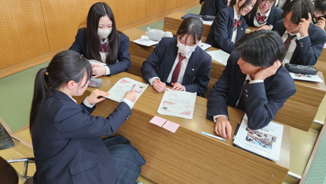


４月23日には指摘された点についてどのように改善すべきかをグループで相談しながら原稿を直しました。生徒からは「正しい英語にしたつもりだったのに、改めて読んだら分かりづらいことに気づいた」「どうしたら伝わる英語になるか、協力して考えることができた」といった声が聞かれました。
発表当日までの１か月半、生きた英語での発表に向け、試行錯誤が続きます。
2024年04月10日
Last school year, 8 students from Sagano High School traveled to Florida in January. Sagano High School and Jupiter High School have had an exchange program since 2015. From 2021 to 2023, it was impossible to travel to Florida, but we maintained our relationship online. Finally, this January, we could return to Florida for our 2-week exchange program on environmental and cultural studies. After returning to Japan, the participants began to formulate their ideas for a presentation on what they experienced, what they learned, and what ideas they wished they could see used here in Japan and in Kyoto. Here is a description of the full Florida exchange program for 2024!
2024年1月4日から17日までの2週間本校生徒が米国フロリダ州にあるジュピター高校を訪問する短期研修を実施しました。ジュピター高校環境学コースの皆さんとは嵯峨野高校の連携校として2015年から交流事業を実施しています。2021年から2023年の期間はコロナ禍により対面による交流はできませんでしたが、オンラインで関係を維持してきました。コロナが5類扱いとなり、ある程度海外への往来ができるようになり、対面による交流を再開することができました。
この2週間の研修で、生徒たちは同コースの生徒の家にホームステイし、ジュピター高校の授業の受講やフィールドワーク等の経験を通して、英語でのコミュニケーション能力の向上はもちろんのこと、異文化と環境学についての理解を深め、批判的・論理的思考力、判断力そして共感力を養うことができました。日本に帰国後、参加者は自分たちが体験したことや学んだことを振り返り、環境問題に関する自らの行動変容を京大環境学堂の皆さんに発表しました。

【写真】参加した高校2年生8名とマイアミ総領事館広報文化担当官（上段右端）
ジュピター高校環境学コース理科教員（上段左端）及び嵯峨野高校引率教員（下段）
以下、研修内容について詳しく報告します。
Pre-Trip Preparations - 出発前の結団式
Before leaving, the students met with the principal, who encouraged them to learn as much as possible and to investigate many research questions.
出発前の結団式では、研修で様々なことに挑戦する決意を代表生徒が表明し、校長先生からは、各自が設定した問いについての自分なりの答えを見つけるべく多くを学んでくるように励ましの言葉がありました。

Arrival and Initial Days - 1月4日～7日
January 4th-7th: On January 4th, the students were warmly received by their homestay families at the airport. The following days were spent enjoying free days with their homestay families, acclimating to the environment. We also met up together at the Jupiter Lighthouse, a symbol of the town of Jupiter, to learn about the history of the town.
約16時間のフライトの後フロリダ州ウエストパームビーチ空港に到着した生徒たちは、ホストファミリーに温かく迎えられました。最初の週末を一緒に過ごしながら、時差ぼけを克服して体調を整え、現地の気候や環境に慣れました。希望者には、ジュピターの町の象徴であるジュピター灯台で町の歴史について学ぶ機会もありました。


Educational Activities and Experiences 研修内容
January 8th: The group visited the Morikami Museum and Japanese Gardens, where they presented on Japanese nature and culture to the staff and docents, followed by a tour of the gardens, appreciating the American interest in Japanese culture.
1月8日：南フロリダにある森上博物館と日本庭園を訪問しました。職員とそこで働くボランティアガイドの方々に日本の自然と文化について発表をした後、現地の植物の生態系を考慮しながら造られた日本庭園を庭師の方（アメリカの方）に案内していただきました。ここではアメリカの人々の日本文化への関心の高さを知りました。私たちの訪問について、地元のメディアの取材を受けました。
https://www.northpalmbeachlife.com/blogs/morikami-hosts-japanese-students
 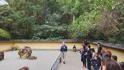
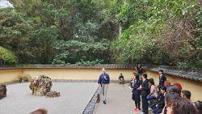
January 9th: They visited Jupiter High School, got their student IDs, met the teachers. They enjoyed a lecture from Ms. Jennifer Smith, an Environmental Scientist, and two other scientists from the South Florida Water Management District, learning about wildlife protection and business-community cooperation. And they had lunch with the lead teachers of the Jupiter Environmental Research and Field Studies Academy (JERFSA)and the principal of Jupiter High School. In the afternoon, they attended a lab class in a wetland ecosystem with JERFSA students and teachers.
1月9日：ジュピター高校登校初日。生徒証明書を受け取って校内に入り、先ずは図書館兼情報センターへと案内されました。そこで、南フロリダ水管理地区の環境専門家、ジェニファー・スミス氏からの講義を受け、野生生物保護に関しての官民の協力について学びました。ジュピター高校の校長先生と環境学コース（JERFSA）長をしている先生との合同主催の昼食会に招待していただきました。午後は環境コースの生徒と湿地の生態系と水質調査に関する実習授業に参加しました。
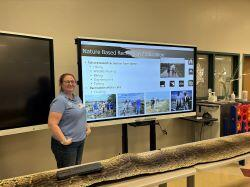 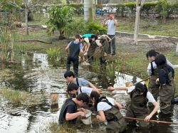
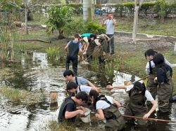
January 10th: They again went to Jupiter High School and had a tour of the expansive school campus. In the afternoon, they did presentations on Japanese nature and culture for the 11th and 12th-grade students of JERFSA.
1月10日：ジュピター高校登校２日目。午前中は広大な校舎を見学しました。午後は、JERFSAの11年生と12年生（日本の高校1年と2年に対応）向けに、日本の自然環境と文化についてプレゼンテーションを行いました。
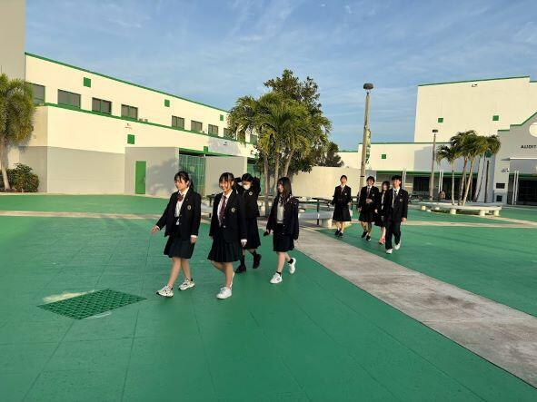

January 11th: They again went to Jupiter High School and attended classes with their homestay siblings.
1月11日：ジュピター高校登校3日目。ホストバディと一緒に様々な教科の授業に出席しました。


January 12th: The group traveled to Everglades National Park, a UNESCO World Heritage and Biosphere Reserve Site, to study native ecosystems and human impacts on them.
1月12日：ジュピター高校環境学コースの生徒と一緒に、ユネスコ世界自然遺産に指定されているエバーグレーズ国立公園および生物圏保護区のフィールドワークに参加しました。そこでの生態系にや在来種へ人間が与えている影響について学びました。
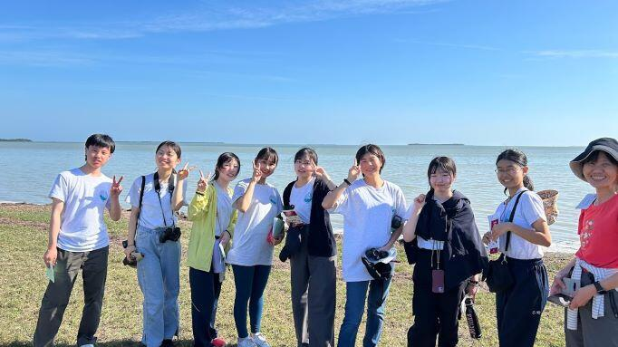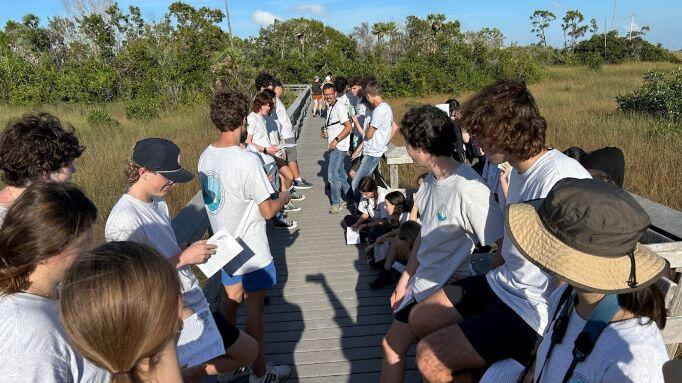
January 13th-15th: The weekend and the American holiday on Monday (Dr. Martin Luther King Jr. Day) were spent with the homestay families. The final event was an amazing farewell party with all the teachers and families. They had a great time!
1月13日～15日：この週末と月曜日（マーティン・ルーサー・キング・ジュニア・デーという祝日）は、ホストファミリーと一緒に過ごしました。希望者には、環境学の専門家によって地元の生態系についての観察ツアーが開催されました。最後は、この研修に参加したホストファミリーの方々が、フェアウェルパーティーを企画してくださいました。参加生徒たちはここでの経験を振り返りながら、ホストファミリーたちと素敵な時間を過ごしました。
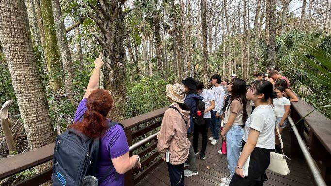
Cultural Exchange and Daily Life - 文化交流と日常生活
Throughout their stay, students lived with American families, gaining insights into the U.S. education system and daily life, enriching the cultural exchange experience.
滞在中、生徒たちはジュピター高校の生徒の家族と日常生活を共にし、様々な異文化体験を積むことができました。ジュピター高校に通うことで、米国の教育制度や教育内容についても理解を深めることができました。
Conclusion of the Trip - 帰国
On the morning of January 16th, the students departed for Kyoto, reflecting on their enriching and educational experience in Florida. Heartfelt thanks were extended to Jupiter High School's teachers, lecturers, and homestay families.
Post-Trip Activities and Achievements - 事後研修
Upon their return, the students prepared for a face-to-face presentation at Kyoto University, sharing the outcomes of their trip and proposing future initiatives for Japan and Kyoto. This event, held at the Laboratory of Regional Planning in the Graduate School of Global Environmental Studies (LRP-GES), was a success, with valuable feedback from professors and graduate students.
帰国後、生徒たちはこの研修を振り返り、自分たちの行動はどのように変容したかについてまとめ、京都大学大学院地球環境学堂地域資源計画論研究室の教授や大学院生にプレゼンテーションをしました。参加してくださった皆さんから多面的なフィードバックをいただき、学びをさらに進めることができました。
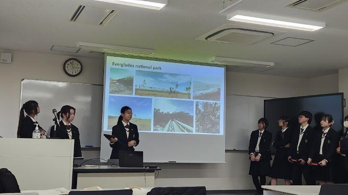
The Sagano High School students' global presentation is featured on the LRP-GES blog
この日の様子は京都大学大学院環境学堂地域資源計画論研究室のブログでも紹介されています。//lrp.ges.kyoto-u.ac.jp/archives/3739
Thanks to everyone involved with the Sagano High School Florida Program, 2024 was a successful year!
嵯峨野高校フロリダ短期研修を実施するにあたり、多方面から様々な御支援、御協力をいただきました。お陰様で貴重な学びと成長の機会を実現することができました。今回参加した生徒たちは、グローバルリーダーの一人として、周囲に良い影響を与え続けてくれると信じています。本当にありがとうございました。
2023年12月13日
外務省...。お仕事の想像が難しいので略歴をご紹介させていただきます。

田中 宏明さん
2011年3月 京都府立嵯峨野高校卒業
2015年9月 京都大学法学部卒業
2016年4月 外務省入省
2016年5月 軍縮不拡散・科学部軍備管理軍縮課
（核軍縮に関する取組、オバマ大統領の広島訪問、NPT運用検討会議等の大型行事）
2018年4月 米国研修（デューク大学ロースクール留学）
2020年4月 ポーランド大使館二等書記官
（情報収集・働きかけ、対EU関係、ウクライナ情勢対応、大臣訪問対応）
2022年4月 中・東欧課（ウクライナ情勢対応）
2022年6月 南米課（南米１０カ国所掌、要人の訪問・来日の大型行事、国連総会等の国際会議）
...ますます遠い存在に感じます。田中先輩を前に最初はガチガチのみなさん。


しかし、ここから田中先輩のすごさを教員共々、思い知ることになるのです。
外務省に勤務するためには、語学や国際法等の知識ももちろん大切ですが、田中先輩はその知識を活かすためのコミュニケーション能力の大切さも教えてくださいました。大使館等海外の勤務地で、重要かつ正確な情報をいち早く入手するためには、様々な方との日頃からのコミュニケーションが大切であり、そのために人間関係のメンテナンスを意識的に行っておられるとのこと。


身振り手振りを交えて、熱くお話しいただいた結果、終盤には生徒のみなさんはこの表情！


外務省という難しいお仕事の紹介でしたが、信頼は安心に繋がるようで、笑顔の絶えない講演となりました。後輩へのメッセージとして、以下３つのことを教わりました。
・世界に目をむけよう。
・問題意識を持って、好奇心と情熱を胸に。
・「夢」を諦めないで、迷ったらワクワクする方へ。
講演後、心に火のついた様子の生徒が...


これからも嵯峨野高校は生徒の皆さんを通じて、教育で世界とつながっていきます。『迷ったらワクワクする方へ』飛び立て！嵯峨野高生！！
2023年11月20日
10月16日（月）、2年生専修コースの生徒がサイエンス英語の授業で、立命館大学のノックソン先生から考古学の講義を受講しました！以下、その時の様子を英語でお伝えします。
The other day we had a special guest lecturer from Ritsumeikan University visit our Science English classes. Dr. Corey Noxon, an Assistant Professor, came and gave the students a lecture and a workshop on creating AR and VR models. Dr. Noxon uses AR and VR when researching Jomon Period archaeology. He explained how AR and VR helps researchers to study Japan's past, even when they live in countries all over the world. Then he showed the students how to use some of the AR tools and they created their own sample models. It was a lot of fun, and everyone had a new appreciation for how technology can help us to learn more about history!


2023年11月13日
11月1日(水)、１年生GI（グローバルインタラクション）の授業で韓国の釜山西女子高校と今年度3回目のオンライン交流をしました。


 We had our final interaction with our friends at Busan SEO Girls' School from South Korea. All of the students shared their presentations they had made in Global Interaction class with them. Then, the students from South Korea taught us more about their country. It was another great experience for us to learn about each other and have fun chatting.
We had our final interaction with our friends at Busan SEO Girls' School from South Korea. All of the students shared their presentations they had made in Global Interaction class with them. Then, the students from South Korea taught us more about their country. It was another great experience for us to learn about each other and have fun chatting.
本校生徒は日本の文化について、釜山西女子高校の生徒は韓国の文化についてそれぞれスライドプレゼンテーションをしました。その後自由にやりとりをして交流を楽しみました。
Some reflections from the students:
以下は生徒からの振り返りです。
"I explained about famous festivals in Kyoto such as Gion Festival and Jidai Festival. After our presentation ended, they also did a presentation about South Korea for me! They explained about the famous TV shows in South Korea. I didn't know about the culture there, but it was so interesting for me. Thanks to this, I could learn about the famous actors in South Korea."
"I think the most fun thing about this event was being able to know about their culture. I believe that understanding each other is very important in the globalized society now. So, I want to do things like this more!"
We had a great conversation, thanks to all of our international friends!
2023年09月21日

A sunny Saturday morning set the scene for the 22nd annual Cosmos Cup for Junior High students. Held at Sagano High School early on September 9th, this contest saw eight finalists representing various different Kyoto Junior High Schools come to show their English skills.
9月9日(土)、第22回こすもす杯中学生英語朗読コンテストを開催しました。予選を勝ち抜いた中学生8名が参加し、日頃の英語学習の成果を披露してくれました。
Cosmos Cup is an English story-telling contest. Students are given a story they have never seen before, and, with only twenty minutes of preparation, are asked to read it out loud in four minutes or less. The students' accuracy and pronunciation are not the only things taken into account! As well as English mechanics, the judges also look for the rhythm of the speech and the passion and emotion put into the words. Not only does English fluency matter, the ability to appropriately perform in English is equally important.
こすもす杯は英語朗読コンテストです。参加者は当日渡された課題文を見て、20分間の練習の後、4分間で朗読します。発音や正確性だけでなく、本文の内容を理解したうえでの抑揚や感情表現なども重要な審査項目です。流暢さに加えて、場面・文脈に応じたパフォーマンスが求められます。
Members of the Sagano High School English Speaking Society also assisted. Four students volunteered their time to share their love of learning English with the Junior High students and help the judges and teachers in running the contest. Duties of these students included reading each contestant's introduction, helping guide contestants between their different rooms, and chatting with the contestants to calm their nerves. With the assistance of these Sagano students, the contest ran smoothly.
また、本校ESS部の生徒達が運営に協力してくれました。4人の部員が、司会進行・参加者誘導だけでなく、参加者の気持ちをほぐす役割も担うなど、様々な場面で活躍し、交流を通じて英語学習の楽しさも伝えてくれました。部員たちのサポートのおかげでスムーズな大会運営ができました。
Judges were members of the Sagano English staff, as well as Vice Principal Shibata Mika. Every student did a fantastic job, and the judges were all very impressed at the English abilities of the students. When it was all over, however, there were only four contestants who left with a prize.
審査員は、本校英語科教員及び柴田副校長が務めました。どの参加者の発表も素晴らしく、審査員一同みなさんの実力に感銘を受けました。審査結果は以下の通りです。
Best Performance Prize: Miss Sakurai, Saikyo High School Affiliated Junior High
Outstanding Performance Prize: Miss Takahashi, Shijo Junior High
Good Performance Prize: Miss Takeuchi, Shijo Junior High
Honorable Mention: Miss Misaki, Seika Nishi Junior High
最優秀賞：櫻井さん【京都市立西京高等学校附属中学校】
（京都府教育委員会教育長賞）
優秀賞： 高橋さん【京都市立四条中学校】
（学校長賞）
奨励賞： 竹内さん【京都市立四条中学校】
努力賞： 三崎さん【精華町立精華西中学校】
Congratulations to our winners, and congratulations to all our contestants!
受賞者の皆さんおめでとうございます！
あらためて決勝参加者8名全員の健闘に敬意を表したいと思います。
みなさん、ありがとうございました！
2023年09月15日


７月中旬、１年生GIの授業でオーストラリアの Sydney Girls' School の６年生（現地の高校３年生）とオンラインで交流をしました。GIの授業で作成した嵯峨野高校紹介スライドを用いて頑張って英語で説明したり、日本語で質問を受けたりと楽しい時となりました。もっと英語を話せるように頑張ろう、と思った生徒も多いようでした。
参加生徒の感想です。「今回、自分たち嵯峨野高校生は英語で、シドニーの生徒は日本語でそれぞれ交流を行っていたので、主言語とは違う言語でコミュニケーションをとることの楽しさを味わうことができました。」
2023年09月15日


嵯峨野高校には相互交流で親交を深めている高校が国外にいくつかあります。シンガポールにも何校かあります。コロナ禍が落ち着きはじめ、久しぶりにシンガポールからの訪問客を受け入れることができようになりました。そして、爽やかな初夏にシンガポールにあるChung Cheng High School の副校長先生が嵯峨野高校を訪問してくださいました！それぞれの学校の取組やグローバル社会での共通課題などについて本校教員と交流した後、本校の授業見学もされました。グローバルインタラクションの授業では、シンガポールの教育について英語で講義をしてくださいました。スーパーサイエンスラボにおける生徒の取組にも大きな関心を寄せてくださり、将来的に協働でサイエンスプロジェクトを計画するお話もすることができました。楽しみです！
2023年09月15日


2年半前、コロナ禍で対面での国際交流が難しい時に、オンラインでの国際交流を嵯峨野高校に申し込んでくださったのが韓国の全羅南道にあるコクソン高校です。それ以来オンラインでの交流で親交を深めてきました。そのコクソン高校が、初めて嵯峨野高校を訪問してくださいました。少し前の話になりますが報告します。
訪問されたのは6月下旬でした。約80人の生徒が関西に修学旅行に訪れた際に、嵯峨野高校の訪問をプログラムに入れてくださったのでした。歓迎のセレモニーでコクソン高校の校長先生からご挨拶をいただいた後、若者の文化や伝統的な遊びといった話題を中心に、本校1年生の生徒とコクソン高校の生徒達は小グループに分かれて文化交流会を持ちました。参加した生徒は「伝えようと意識すると伝わるし、気持ちも通じ合えることがわかった。」「英語の文法などを気にして、話すのをためらうくらいなら、とりあえず話してみることが大切だと感じた。」という感想を寄せてくれました。韓国の同世代の生徒と交流できたことが嬉しかったようです。
2023年07月13日
On Saturday, July 8th we held our annual Sagano Immersion Day for Summer Seminar. 17 first-year students took this opportunity to come close to natural, everyday English! Led by the AETs at Sagano High School, we were joined by four AETs from other high schools around Kyoto to enjoy a day filled with experiences using English throughout the day.
In the first half of the day, participating students enjoyed a variety of activities and lessons centered around English language or cultural experiences. It was packed full of fun and engaging activities which gave the students at Sagano a chance to really flex their English skills. They all worked hard to think critically and speak extemporaneously, and enjoyed meeting our guests from America and Canada.


In the afternoon, they practiced and performed improvisation activities to boost their extemporaneous production skills while enjoying cooperative performance activities with their friends. We are grateful for the AETs who joined us, and thankful for an enjoyable day using English!


{kind=link}
{kind=link}
{kind=link}
{kind=link}
{kind=link}
{kind=link}
{kind=link}
{kind=link}
{kind=link}
{kind=link}
{kind=link}
{kind=link}
{kind=link}
{kind=link}
{kind=link}
{kind=link}
2022年05月26日
今年度もいよいよオンラインによる海外との交流が始まりました！まずは、5月16日に韓国釜山西女子高校との交流の様子をお伝えします。
自己紹介をした後は、お互いが知っている日本や韓国の若者文化の話で盛り上がりました。
Greetings from Sagano High School! We are having a great year so far and we wanted to report on the International Interactions we have experienced so far here at Sagano High School!
On May 16th we had our first interaction and it was with Busan SEO Girls' High School, located in South Korea! We had a great time talking with them, introducing ourselves and sharing interesting cultural ideas.
{kind=link}
{kind=link}
5月18日は、2校と交流しました。ハワイのマウイ島にあるジェームズキャンベル高校と釜山西女子高校です。ジェームズキャンベル高校の生徒は、英語による初めてのオンライン交流で少々緊張気味の嵯峨野生がリラックスできるように、分かりやすい英語で、ジョークも交えながら会話をファシリテートしてくれていました。感謝です！
Then on May 18th we had two interactions, one with Busan SEO Girls' High School and one with James Campbell High School, which is located on Maui in Hawaii, USA! We had so much fun learning about each other and having a great time communicating. We can't wait until our next interactions with them and with our other international partners!
{kind=link}
{kind=link}
2021年12月07日
Science English (科学英語）の授業では、Scicence Communicator(サイエンスコミュニケーター）として必要なスキルの習得を目的に、実践的な英語でやりとりする機会を設けています。11月29日には1年8組の生徒がシンガポールにある連携校チュンチェンハイスクールとオンラインで交流し、事前に準備したプレゼンテーションの交換発表会を開催しました。本校の生徒のトピックは「日本における科学技術や数学研究について」でした。以下英文によるレポートです。
Students in the Science Course at Sagano High School continue to have exciting opportunities not found in the traditional classroom! This time, on November 29th, first year students of Class 8 had the chance to interact online with students from Chung Cheng High School (Yishun) in Singapore
{kind=link}
Conducted over Google Meet, 40 students from CCHY joined 40 students from Sagano. After some brief introductions, the students moved into smaller breakout rooms. Here, the first-year Sagano students gave slideshow presentations in English about their most recent research project -- Science, Technology, and Math in Japan. Our students challenged themselves to discuss difficult topics in English, and the CCHY students were delighted to ask many questions and learn a lot about STEM in Japan.
{kind=link}
Next, the Chung Cheng High School (Yishun) students gave presentations of their own about culture, history, life, and attractions in Singapore, which the Sagano students listened to with rapt attention. In turn, the CCHY students gladly answered the many questions about Singapore that the Sagano students had!
{kind=link}
{kind=link}
With just enough time for a little free talk at the end, the students parted ways at the end of the hour, electrified by the exchange of scientific and cultural ideas and delighted by the chance to have made friends with fellow students abroad.
Sagano High School teachers and students are deeply grateful to Chung Cheng High School (Yishun) in Singapore for our continued friendship and for helping to create opportunities such as this one to strengthen our ties while sharing our scientific and cultural ideas with each other. We are eagerly awaiting our next meeting!
2021年10月20日
サイエンス・イングリッシュの授業では、専修コースの皆さんが様々な科学分野の講義を英語で聴く機会があります。今回は1年生がVR(仮想現実）とAR(拡張現実)の違いや、研究者がどのように利用しているか、などについて学び、実際にアプリを使って体験もしてみました。以下英文によるレポートです！
On September 27th, first year students in the Science Course at Sagano had an opportunity to learn about and experience AR (Augmented Reality) and VR (Virtual Reality) in their Science English classes.
First, they received a private video lecture on AR and VR created especially for Sagano High School by Eric Hawkinson from the Kyoto University of Foreign Studies. In the lecture, Mr. Hawkinson explained the AR/VR spectrum and various applications of the technology in our lives.
{kind=link}
{kind=link}
Following that, the students were joined live via the internet by Dr. Corey Noxon, a researcher at Ritsumeikan university studying Jomon archaeology. Dr. Noxon explained how archaeologists use AR and VR technology in their research to preserve and share records of ancient artifacts. Guided by Dr. Noxon, the students were able to use some of this same technology themselves, using an app on their iPads called Sketchfab to interact with 3D models of real Jomon-period artifacts in augmented reality. This app can be used to interact with 3D models from a host of different disciplines, and the students may also be able to use this for their own research in their science labs as well.
{kind=link}
{kind=link}
In all, our class of engaging English lectures combined with hands-on interaction gave our students a wonderful opportunity to closely interact with cutting-edge technology, and to think deeply about its applications in science and in their own lives. We are deeply grateful for Mr. Hawkinson and Dr. Noxon for their contributions to our lessons, and we hope our students can continue to use these ideas and technologies throughout their time in Sagano.
{kind=link}
〒616-8226
京都市右京区常盤段ノ上町15番地
TEL 075-871-0723 FAX 075-871-0724
E-mail [email protected]
Copyright (C) 京都府立嵯峨野高等学校 All Rights Reserved.